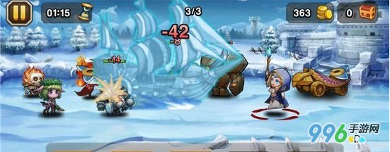
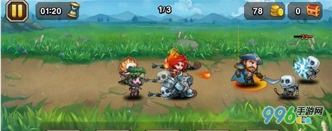
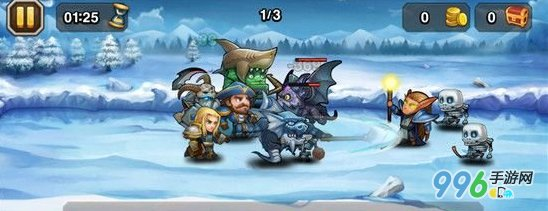
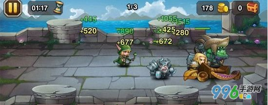
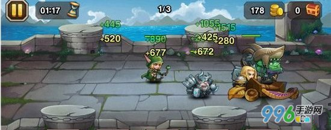
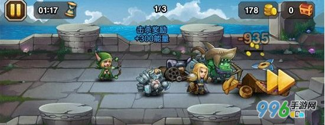
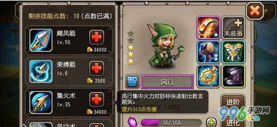

|
|
To prove that they work, you can execute either of the following links:
别以为玩 刀塔传奇 就是战斗点点技能就完了，其实有6大必知技巧我们是要了解的。今天给大家带来刀塔传奇6大必知技巧 刀塔传奇成神攻略。
1、打断
打断又分技能打断和普通攻击打断，先来说说大家经常说到的技能打断，如下图：

敌方的冰女正准备放大招，我方船长看势放出幽灵船，成功打断了冰女的输出，等到冰女下次技能回复的时候，她的宝箱已经掉出来了。技能打断是通关 PVE中非常重要的一点，一个技能打断的成功与否，往往就是胜利或失败的关键。大部分玩家都会以观察敌方起手作为打断技能的依据，这种判断方法，在遇到冰女、小鹿这种英雄时，成功率会比较高。在遇到类似于美杜莎、恶魔巫师等瞬发大招英雄时，需要利用另外一种方法：观察敌方血量判断释放大招的时间。众所周知，被攻击所扣除的血量会作为能量的回复，当英雄被打到一定的血量时，能量槽就会满。当然，技能打断不仅限于大招，只是大招的可控性比较高，普通技能的打断技能较低，像火枪爆头，风行束缚箭等技能也可以打断敌方的技能。
再来说说普通攻击的打断，如下图：

右边的骷髅小兵受到攻击后向后仰，即使它当时准备射出一箭，但也由于被攻击而无法射出。但是，大多数前排都不会出现被打断普通攻击的情况，只有一些脆皮法师或者骷髅小兵会被打断。那么，普通攻击打断对我们有什么帮助?有没有试过这样一种情况，有时候一些法师会被你的几个英雄轮流攻击，直到死的那一刻都没有攻击出一次，但有些时候可以。这就涉及到你有没有刚好在法师攻击的时候打断他，如何做到普通攻击打断?众所周知，大招的施放会中断当前一切动作，这就好比一个普通攻击的时间调节器，看准时机调整就可以做到普通攻击打断。打断一个法师的输出，对自己前排肉盾的帮助是很大的。
2、起手
起手，也叫攻击前摇，就是英雄在进行攻击前的一个比较明显的动作。下图中的火女在放龙破斩，可以看到她的脚下有个光圈，英雄放技能的时候都会有。可能很多玩家都会犯一个错误，就是英雄在放技能的时候还没有放出就点了大招，结果取消了前面的技能，导致战斗失利。大招的释放不仅取决于打断，还要观察英雄的攻击起手。对于群攻类英雄，如冰女、宙斯等，可以先等群攻小技能放出的瞬间再释放大招，取消了技能后摇，增加了输出时间。

3、站位
刀塔的站位分前排、中排、后排。下图是反例，把英雄堆在一起会被敌人一波带走，所以最好的站位就是前中后排都有。站在最前的英雄决定了战斗线的位置，如果敌方战线压得越紧，我方就越有利，相反我方会不利。最常见的例子就是黑鸟的禁锢，禁锢前方英雄后，整个队伍都能切入敌人内部，优先杀死后排脆皮。站位在技能打断方面也有间接的联系，一些技能会由于站位而失去作用，如船长的船在没有战线推进的情况下是不能打断火枪的大招的。
4、能量回复
英雄的能量获得有几个途径：攻击、被攻击、击杀奖励、过场回复、装备返还。攻击基本上以一个固定的百分比回复能量，除了一些特定的技能，如美杜莎的灵蛇可以吸能量;被攻击是以自身扣除的血量计算回复;击杀奖励固定为300点能量;过场回复是根据英雄自身的能量回复能力决定;装备返还主要是刷新球的能量返还效果。

船长作为一个前排肉盾，承受的伤害会比较多，所以能量的回复会比较快。当船长的能量在一回合刚开始前满了，可以先放，挨打很快就会再回满能量的。攻击、被攻击和过场回复的可控性不大，抢击杀奖励(也叫抢人头)是获得能量的主要可控手段。假如对面一堆残血敌人，而我方宙斯满能量，放了大招能量又可以满了。抢人头有什么好处呢?1、防止满能量的英雄获得击杀奖励;2、为下一回合的关键大招(如群体控制、单体高伤)作准备。

5、攻击顺序
每个英雄都有四个技能，第一个是主动释放的，第四个大多是被动技能(加力量、加魔抗之类)。而每个英雄的攻击都会有一套固定的顺序，战斗中按这个顺序进行循环。大多数英雄的攻击顺序是：普通攻击——二技能——三技能——普通攻击。多数英雄以这套顺序循环，每过一个回合会重新开始循环，释放大招不会破坏循环。一些英雄会先放三技能再放二技能(如船长)，还有少数英雄(如月骑、美杜莎)每次攻击都会有特效，放技能的顺序又有所不同。所谓知己知彼百战百胜，了解每个英雄的攻击顺序对竞技场和刷副本都很有帮助。如宙斯加火女的组合，二技能都是群体伤害，都会在第二次攻击放，这样就会在瞬间对敌方团队进行大量输出，再加上一个宙斯大招就可以快速秒掉一些怪了。

6、物伤与法伤
下图为小黑和电魂，小黑的大招是全物理伤害，而电魂的是魔法伤害。英雄都有物防和魔防，有些英雄由于技能作用，物防或魔防会很高。如电魂的魔防就很高，如果用火女的大招打到电魂身上，那就是浪费了。对于物伤技能，如小黑、拍拍熊等，尽量不要打在高护甲的敌人身上(石头人、龙龟等);而法伤技能，如火女、恶魔巫师等，不要打在高魔抗的敌人身上。

以上就是刀塔传奇6大必知技巧 刀塔传奇成神攻略。希望对大家游戏有所帮助。